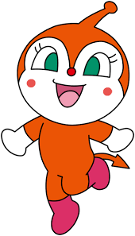

DokinChan
Dokin-chan (ドキンちゃん) is a major character in the Anpanman series. She is Baikinman's partner, and she is the secondary antagonist of the 1988 Anpanman episode series a little time ago, maybe... she is just like the other germs. She is Shokupanman's girlfriend, she appeared in a picture book in 1975 called Anpanman and Dokin-chan.
Appearance
Dokinchan is an orange-red germ with pink shoes and white hands. She has green eyes and small red cheeks and nose, and her entire face is white except for a continued line of orange reaching her nose. She has a single antenna, and a long tail.
Personality
Dokinchan is selfish and greedy, she does not care about anyone else getting hurt or suffering except Shokupanman. She normally bosses Baikinman around (when she's in Baikinman's house), getting him to fetch her various foods, items and even people. When they start to lose a fight, she is often the first to run.
Relationships
Dokinchan loves Shokupanman with a burning passion. Her room is covered in posters of him, and toys of him she has made. She often daydreams scenes with him showing her affection. Shokupanman is the only person she cares about harming other then herself, often telling off Baikinman for even getting close to hitting him in a fight.
She has a little sister who visits sometimes, Kokinchan, who likes to annoy her by taking her Shokupanman dolls and running away with them, even she fights Baikinman, only she cries.
Equipment
Dokinchan had a staff with two points on it. One point, when touched to something, makes it increase in size. The other end decreases. The staff wasn't used in many episodes, and has been dropped.
She also has a long, pink UFO she flies around in. Its hands have a yellow colouring. She rarely uses it to fight with, usually flying around with it holding baskets or flowers, however she does hold hostages when required by Baikinman.